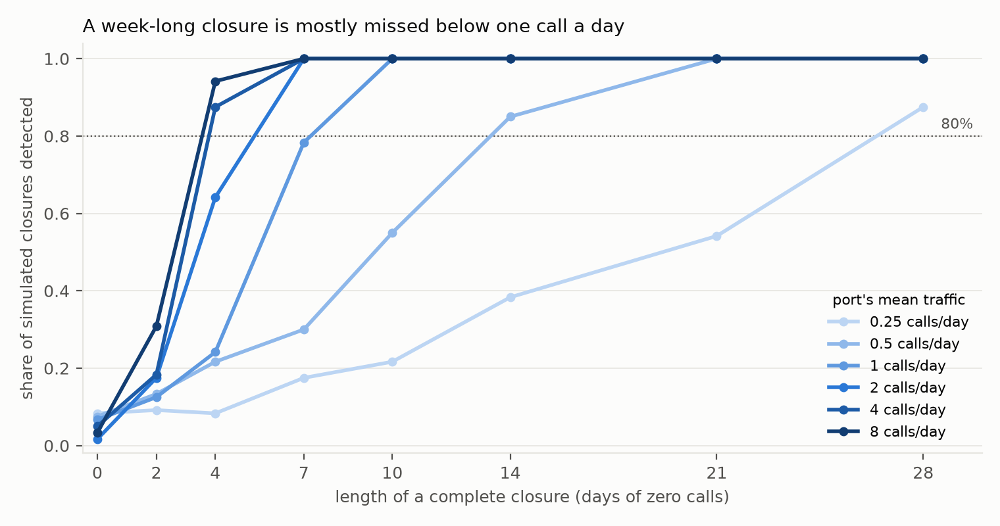
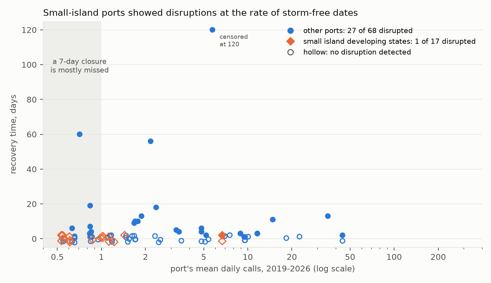
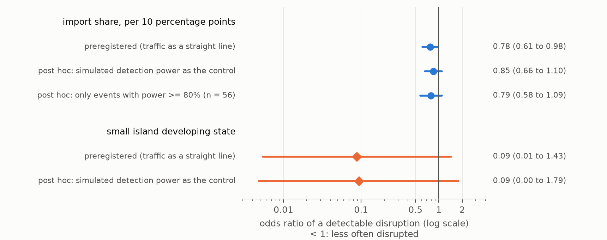

Verdict: Inconclusive. Neither preregistered hypothesis could be decided, and the lead's direction is not borne out. The primary hypothesis was that a port's share of national imports predicts recovery beyond size and storm. It came out at ΔAIC 2.3 against a bar of 10. A permutation test puts that gain within chance (p = 0.14). The association in it turns out to track how many ports a country has, not import concentration as such.
The small-island hypothesis (a time ratio ≥ 2) could not be estimated as planned. Only 1 of 17 measurable small-island events showed any detectable disruption. That is the rate the same method gives at small-island ports on dates with no storm (3 of 49), so there was nothing to time. Measured instead as average days disrupted, small-island ports showed far less disruption than other ports, not more.
The deeper finding is about what this kind of data can see. Most Pacific island ports are too quiet for ship-call records to reveal a closure shorter than a month. Of the six measurable small-island harbours that took hurricane-force winds, four would almost certainly have shown a complete two-week closure, and none did. At the other two (Montego Bay and Santiago de Cuba under Hurricane Melissa, 2025) the method could not have reliably seen one.
In plain terms
When a severe cyclone passes near a port, how long until ships come back? Are small island ports, which often handle most of a country's imports, slower to recover? We used a public daily record of ship visits to 2,065 ports from 2019 to 2026, and matched it with every cyclone track.
Most Pacific island ports turned out to be too quiet to answer the question. Fifty of 62 get fewer than one ship every two days. At that rate, a port can be shut for two weeks and the record looks much like an ordinary lull. Before looking at any result, we simulated how long a closure would have to be to show up at each level of traffic.
At the small-island ports busy enough to measure (17 cases, mostly in the Caribbean, five in the Pacific), we almost never saw a disruption. The one we saw (Kingston, Jamaica, two days) is the rate our method gives on dates with no storm at all. Only six of those ports actually took hurricane-force winds. At four of them, a full two-week shutdown would almost certainly have shown up, and none did. At the two ports hit hardest by Hurricane Melissa, it might not have. That is not evidence that the islands escaped harm. Ship visits are not cargo, the hardest-hit ports were usually the quiet ones, and a service running at half capacity would often look normal in this record.
At busier ports elsewhere, a detected disruption typically lasted about six days, matching earlier work. Even there, some detections are probably false alarms.
Before the season opens on 1 November 2026, we have locked in a forecast for 12 Pacific ports. We will score it once the season's data are complete, in about September 2027.
What was asked
The lead (scouted 2026-10-16 from the University of Auckland's Blue Pacific Horizons signature research area) claimed three things. Pacific island ports take a median of at least 14 days to recover after a Category 3+ cyclone. That is at least twice as long as matched non-island ports. And a port's share of national imports predicts recovery better than its size (ΔAIC ≥ 10).
Counting events before computing any outcome showed the first claim had no usable sample, so plan.md restated the hypotheses before any recovery time existed:
- H1 (primary): adding import share to both parts of a two-part model improves AIC by ≥ 10. Supported if ΔAIC ≥ 10; Refuted if < 2; Inconclusive between.
- H2 (secondary): small island developing states (UN list) recover at least 2× more slowly, adjusted (Weibull time ratio). Supported if the interval is above 1 and the point estimate is ≥ 2; Refuted if the upper end is < 2.
- Pacific: a descriptive case series, with what the method could have detected at each port.
- Forecast: frozen before 1 November 2026, scored after the season.
What was already known
| Work | What it establishes | What it leaves open |
|---|---|---|
| Verschuur, Koks & Hall (2020), Transp. Res. D 85:102393 | AIS-observed port disruption after natural disasters: 141 disruptions, 74 ports, 27 disasters; median 6 days, p95 22.2 days | small islands; import concentration |
| Verschuur, Koks & Hall (2023), Nature Climate Change 13:804–806 | modelled downtime at 1,320 ports and its trade knock-ons; some small island states among the most exposed | observed recovery |
| CyPort (arXiv:2509.22656) | 1,927 port–cyclone interactions at 145 US ports, 2015–2023 | outside the US |
| US DOT / MarTREC (2023), Prediction of port recovery time after a severe storm | AIS vessel counts; Gulf and Florida storms of 2022 | outside the US |
| IMF WP 26/99 (2026) | PortWatch nowcasts of country trade, incl. some SIDS | port-level recovery after cyclones |
No earlier PortWatch- or AIS-based estimate of recovery at Pacific island ports, test of import concentration, or frozen seasonal forecast was found (searches 2026-10-16 and, by the reviewer, 2026-10-17).
How it was done
Data. IMF PortWatch daily port calls, 2019-01-01 to 2026-07-24 (2,065 ports). The PortWatch ports database
(size; share of national maritime imports, a model-based estimate). IBTrACS v04r01 tracks to 2026-10-15. All
retrieved 2026-10-16; hashes are in data/raw/VINTAGE.txt.
Events. A port–storm pair where the hourly-interpolated track passes within 150 km at Category 3+ (the primary arm). "Category" is the Saffir–Simpson scale from 1-minute winds (JTWC/NHC), not the Australian or Fiji regional scale. The arm holds 213 events. 85 of them (34 storms) are at ports averaging ≥ 0.5 calls a day, with ≥ 270 days of history before and the follow-up the method needs after. The rest are 114 at quieter ports, 8 with too little follow-up and 6 with too little history.
What counts as a disruption. For each event, a negative-binomial model of the port's daily calls over the two years before, with weekday, seasonal and trend terms. It models the port's share of traffic at reference ports 1,000–4,000 km away, so that a shock to all shipping (COVID's collapse in early 2020) cancels. 2,000 simulated paths give the range of normal. An event is disrupted if the deepest dip in the first 14 days falls below the 5th percentile of the same statistic in the simulated paths. At the quietest ports that window stretches to the smoothing-window length, up to 27 days. Recovery time is the first day from the deepest dip from which calls stay within the normal range for a full window. The smoothing window scales with traffic, about ten expected calls: 7 days at busy ports, 21 at half a call a day.
What the method can see, worked out first. Synthetic ports with known closures, run through the identical algorithm (F1; the rows quoted use dispersion 0.25). At ≥ 2 calls a day, a complete week-long closure is caught every time. At one call a day, 78% of the time. At half a call, 30%, and a two-week closure 85%. The simulation uses independent noise. Real series have serially correlated swings, so the real false-alarm rate, measured after the review at storm-free dates, is higher: about 10% (below).


Model. Part A: a logistic model for disrupted or not. Part B: a Weibull accelerated-failure-time model for recovery days among disrupted events, censored at 120. Both use log port size, log mean daily calls (a detectability control), category and distance. Part A intervals are clustered by storm; part B intervals use a storm-cluster bootstrap.
Changed from the lead before any outcome (deviations D1). 50 of 62 Pacific island ports average under 0.5 calls a day. Of 32 Pacific events in the primary arm, 5 were measurable, from 3 storms. So the Pacific became a case series. The island comparison widened to all small island developing states, and import concentration became the primary. "Non-island" became "not a small island developing state".
Caught by the method's own tests before any real event (D2, D3). A pointwise rule gave 23% false alarms; it became one familywise test. An estimated COVID adjustment absorbed nothing; it became an offset. A fixed 7-day window could not see even a 28-day closure at half a call a day; it now scales with traffic.
Results
H1: Inconclusive, and indistinguishable from chance
| specification | events (storms) | ΔAIC | part A: odds of disruption per +10 pp import share | verdict |
|---|---|---|---|---|
| primary: Cat 3+ ≤ 150 km | 85 (34) | 2.33 | 0.78 (0.61–0.98) | Inconclusive |
| Cat 1+ ≤ 150 km | 435 (100) | 9.52 | 0.84 (0.73–0.97) | Inconclusive |
| Cat 3+ ≤ 100 km | 53 (24) | 3.40 | 0.67 (0.40–1.12) | Inconclusive |
| Cat 3+ ≤ 250 km | 189 (50) | 9.08 | 0.78 (0.65–0.92) | Inconclusive |
| recovery = back within 10% (T10) | 85 (34) | 2.18 | as primary | Inconclusive |
| own-history counterfactual | 85 (34) | 1.54 | 0.79 (0.63–0.99) | (below the Refuted line) |
| excluding Mar–Jun 2020 | 81 (32) | 1.46 | 0.79 (0.63–0.99) | (below the Refuted line) |
All the gain is in part A, whether a disruption is detected at all (ΔAIC +4.2). Adding import share to part B makes the fit worse (−1.8), and its time ratio has a bootstrap interval of 0.17 to 670. These data say nothing about import share and recovery length.
Two post-hoc checks (D8) say the part-A association should not be read as an import-concentration effect:
- It is within chance. Shuffling import share across ports 400 times gives a null distribution of ΔAIC whose 95th percentile is 5.0. The observed 2.33 is exceeded 14% of the time. (For the Cat 1+ arm the reviewer's permutation gives p = 0.003, so an association exists there, but see the next point.)
- It tracks how many ports a country has. PortWatch's share is within-country, so a port in a one-port country has share 1 by construction. Across the 85 events, share correlates −0.79 with log(number of PortWatch ports in the country). Adding that variable turns the share coefficient positive (+2.6, p = 0.24); the port-count variable carries the association (+1.26, p = 0.008). In the Cat 1+ arm, share goes to −0.37 (p = 0.72). Ports in China, the US, Japan, Taiwan and the Philippines were more often detectably disrupted than ports elsewhere.
Candidate reasons include pre-emptive typhoon closures at Chinese and Japanese ports (short, clean, detectable dips), AIS density, storm geometry (landfalls versus offshore passes), relief shipping raising calls at island ports after a disaster, and the busy-port false alarms below. None of them is import concentration.
H2: Inconclusive, because there was almost nothing to time
| events | storms | detectably disrupted | at storm-free placebo dates | |
|---|---|---|---|---|
| small island developing states | 17 | 8 | 1 (Kingston, Melissa 2025: 2 days) | 3 of 49 runs (6%) |
| other ports | 68 | 27 | 27 (40%); median recovery 6 days, p90 34 | 23 of 209 runs (11%) |
| Pacific island ports (subset of the first row) | 5 | 3 | 0 | — |
With one disrupted small-island event, part B cannot estimate a small-island time ratio. H2 is reported as Inconclusive by a guard (fewer than 3 disrupted small-island events → not estimable). The guard was added in D4 after the descriptive table was seen; it was not preregistered. The alternatives give different answers:
- the D4 code without the guard (storm bootstrap): time ratio 0.40, interval 0.14–1.34, which would be Refuted;
- lifelines' own interval: 0.40 (0.06–2.61), which would be Inconclusive;
- a pooled measure, mean recovery days counting undisrupted events as 0: 0.12 days at small-island ports against 5.84 elsewhere, ratio 0.02 (0.00–0.09).
The lead's directional claim, that small island ports are slower, is therefore contradicted in the pooled sense. In the conditional sense, recovery time among disrupted events, it is untestable here. In the Cat 1+ arm, where 5 of 53 small-island events were disrupted, the adjusted time ratio is 0.80 (0.15–3.89).


External check, with a caveat. The median recovery among detected disruptions at other ports, 6 days, equals Verschuur et al.'s (2020) AIS median. But at the placebo false-alarm rate, about 7 of the 27 non-small-island detections are expected to be false alarms. Those carry spurious "recovery times" of median 34 days (10 of 26 censored at 120), so the 6-day median and 34-day p90 describe a mixture.
Two influential events. Lake Charles (56 days) and Calcasieu Pass (60 days) after Hurricane Laura were hit by Hurricane Delta on days 43–44. Censoring them at day 43 barely changes part B. Cebu after Typhoon Rai (December 2021) is the only disrupted event censored at 120 days. Its calls stayed at about half their earlier level for all of 2022, a level shift whose cause (storm damage, Omicron, or a counting change) the series cannot tell. Without Cebu, part B's category effect falls from ×3.1 to ×0.9 per category step. That matters for the forecast below.
Post hoc: what the small-island result can and cannot carry (D7, D8)
Exposure. "Category 3+ within 150 km" describes the storm, not what the port felt. Using IBTrACS's 64-kt wind radii in the quadrant facing the port, only 6 of the 17 small-island events were inside hurricane-force winds: Nouméa/Niran, Apra Harbor/Mawar, Kingston/Beryl, Mariel/Rafael, Santiago de Cuba/Melissa and Montego Bay/Melissa. Inside those radii: small-island ports 0 of 6 disrupted, other ports 14 of 23 (Fisher p = 0.017). Outside: 1 of 11 against 8 of 34 (p = 0.42). Radii were missing for 11 other-port events.
Event-specific power. Closures were simulated under each event's own fitted counterfactual, reference index and threshold (100 replicates each). For a complete 14-day closure the mean power across the 17 events is 0.93, but it is 0.33 at Santiago de Cuba/Melissa (whose calls rose after the storm, consistent with relief shipping) and 0.79 at Montego Bay/Melissa. For a week-long closure the mean is 0.61, and 10 of 17 events are below 0.8. Partial disruption is mostly invisible: calls halved for 14 days are caught 45% of the time on average, halved for 28 days 57%. Fifteen of 17 events are below 0.8 for both.
So the surviving claim is narrow. Four measurable small-island harbours took hurricane-force winds with near-1 power for a two-week complete closure: Nouméa, Apra Harbor, Kingston under Beryl, and Mariel under Rafael. None showed one. At the two Melissa direct hits it could not have been seen reliably. A half-capacity month could have been missed almost anywhere.
Detectability as a control. Small-island events have less power to show a week-long closure (0.66 against 0.86 by the simulation grid). Replacing part A's straight-line traffic control with each event's simulated power shrinks the import-share log-odds by about a third (to an odds ratio of 0.85, 0.66–1.10, p = 0.21). The small-island odds ratio stays at 0.09 (0.00–1.79).


The Pacific case series
| port | storm | traffic (calls/day) | hurricane-force winds at port | power, complete 14-day closure | power, halved 28 days | dip (observed ÷ expected) | threshold | disrupted |
|---|---|---|---|---|---|---|---|---|
| Lautoka, Fiji | Harold, Apr 2020 (Cat 4, 111 km) | 0.99 | no | 1.00 | 0.41 | 0.93 | 0.24 | no |
| Suva, Fiji | Harold, Apr 2020 (Cat 4, 103 km) | 1.02 | no | 1.00 | 0.52 | 0.88 | 0.24 | no |
| Nuku'alofa, Tonga | Harold, Apr 2020 (Cat 4, 115 km) | 0.54 | no | 0.96 | 0.51 | 0.64 | 0.36 | no |
| Nouméa, New Caledonia | Niran, Mar 2021 (Cat 3, 50 km) | 1.44 | yes | 1.00 | 0.63 | 0.38 | 0.30 | no (close) |
| Apra Harbor, Guam | Mawar, May 2023 (Cat 4, 37 km) | 0.87 | yes | 1.00 | 0.51 | 0.78 | 0.36 | no |
The other 27 Pacific events in the primary arm could not be analysed. 26 are at ports below 0.5 calls a day, including Luganville under Harold's eye, Savusavu under Yasa, and every Saipan, Tinian and Rota event. The remaining one is Apra Harbor under Bavi (July 2026), with too little follow-up yet. The strongest hits on Pacific main harbours in recent memory (Pam at Port Vila 2015, Winston at Suva and Lautoka 2016, Gita at Nuku'alofa 2018) predate PortWatch.
The frozen forecast for 2026–27
The forecast model has base covariates, import share and the small-island indicator in part A. Part B drops the indicator, because one disrupted event cannot estimate it (D5). It was fitted once and frozen on 2026-10-17:
forecast_model.json 0cbaa6e125ad071f05641a2c3ad58f096c4ad993bbef50220ed77ff6e43b8d25
forecast_table.csv 26e6c7aa3693f2734372e5ca153d38c0daa8ee85b5d3fd19d0c7e73e635f45c3
For a Category 4 cyclone passing 75 km away (alphabetical; this is not a ranking):
| port | chance of a detectable disruption | median recovery if disrupted (days) |
|---|---|---|
| Apia, Samoa | 0.02 | 23 |
| Apra Harbor, Guam | 0.03 | 23 |
| Honiara, Solomon Islands | 0.03 | 22 |
| Kimbe, Papua New Guinea | 0.09 | 14 |
| Lae, Papua New Guinea | 0.15 | 16 |
| Lautoka, Fiji | 0.08 | 18 |
| Nouméa, New Caledonia | 0.08 | 19 |
| Nuku'alofa, Tonga | 0.02 | 23 |
| Papeete, French Polynesia | 0.04 | 23 |
| Port Moresby, Papua New Guinea | 0.15 | 17 |
| Rabaul, Papua New Guinea | 0.10 | 14 |
| Suva, Fiji | 0.08 | 18 |
How to read it:
- The chances mostly track traffic. Part A's coefficient on log mean daily calls is 1.11, so the busier PNG ports score higher because a disruption there is easier to see, not because they are more vulnerable.
- The medians rest on two choices. Had part B kept the small-island indicator, as the plan specified, they would be about four times shorter: Port Moresby 4 days instead of 17, Suva 5 instead of 18, Apia 12 instead of 23. D5 was made after H1 and H2 were seen.
- The category effect behind the medians rests on Cebu. It depends on one censored event (Cebu/Rai); without it the effect vanishes. Medians above the 120-day horizon (nine rows, all Category 5 at 25 km) extrapolate beyond the fitting data, which contain no Category 5 event.
The forecast file stays frozen. The scorer, code/score_forecast.py, was revised after the review so that it runs
without judgement calls (D8):
- It checks the model's hash.
- It uses the frozen 2026 port covariates (
forecast_port_covariates.csv, verified to reproduce all 108 forecast rows). - It rebuilds the season's events from a new vintage without touching the sealed data.
- It scores recovery with censoring, and reports Brier scores against both the all-port benchmark (0.33) and the small-island rate (0.06).
A dry run on the 2019–20 season reproduces the three Harold events. Scoring is due once PortWatch covers 30 April 2027 plus 135 days, about September 2027. With fewer than three events the score will be reported and not interpreted.
What this does and does not show
It shows three things. First, at the four measurable small-island harbours that took hurricane-force winds and where the method had near-full power, there was no complete two-week closure (2019–2026). Second, import share as PortWatch defines it is not a usable predictor of port recovery: its signal is within chance and is carried by country port counts. Third, most Pacific ports are too quiet for ship-call records to answer the lead's question, and F1 shows where that limit lies.
It does not show that small island ports are resilient. Eleven reasons:
- Port calls are not cargo. A port can receive ships while cranes, warehouses or roads are down.
- The hardest-hit ports are mostly the quiet ones. 49 of 68 small-island events in the primary arm were at ports too quiet to analyse. The measurable ones are main national harbours.
- Partial disruption is mostly invisible (calls halved for a month: 57% power on average).
- Exposure is thin. Only 6 measurable small-island events were inside hurricane-force winds, and two of those were beyond the method's power.
- Small vessels are outside the data. PortWatch counts AIS-equipped cargo and tanker vessels, not the small inter-island boats that carry much of the Pacific's domestic supply.
- Relief and naval shipping can raise call counts after a disaster (Santiago de Cuba after Melissa).
- Second storms inside the 120-day window (Laura then Delta).
- The worst cases predate the record. PortWatch starts in 2019, after Pam, Winston and Gita, and Dorian's devastation of Freeport (September 2019) has too little prior history to analyse.
- Metering gaps: AIS coverage loss at a port, PortWatch revisions, and anchorage calls outside the port polygon.
- Disruptions starting more than about two weeks after the storm fall outside the test window.
- The detection threshold carries Monte Carlo noise. The reviewer's eight-seed rerun gives 28 ± 1 detections; no small-island verdict is near its threshold.
"Small island developing state" is the UN label. It includes territories of the US, France and the UK (Guam, the Northern Marianas, New Caledonia, the Turks and Caicos), so it does not describe a port's resources. The code's list also includes Bahrain, which is no longer on the UN list; Bahrain has no events, so this is immaterial.
Process and deviations
Eight logged deviations (deviations.md):
- D1: hypotheses restated before any outcome.
- D2, D3: method flaws caught by tests.
- D4:
analysis.pycrashed on first run. The fix and new tests were committed before the rerun. The H2 guard added there is post hoc. - D5: the forecast's part B drops the small-island indicator.
- D6: forecast hashes.
- D7: post-hoc detectability checks.
- D8: acting on the adversarial review (fix first, 21 issues). It added the placebo, exposure, event-power,
country-port, permutation and H2 checks (
code/review_response.py). It also revised the scorer and correctedrecovery.py's docstring, whose code is unchanged since the plan.
Code was committed before the outcomes it produced. The plan is at d12c3f0, the analysis fix at 3c194e6, the results and frozen forecast at 0c928af, and the review response at e230de9.
Reproducing it
bash code/download.sh # PortWatch + IBTrACS; compare data/raw/VINTAGE.txt
venv/bin/python code/events.py # cyclone-port events from tracks and coordinates only
venv/bin/python code/test_recovery.py # 9 synthetic checks of the recovery algorithm
venv/bin/python code/detectability.py # F1 grid (28 cores, ~10 min)
venv/bin/python code/recovery.py # every event's counterfactual, disruption and recovery (~30 min)
venv/bin/python code/test_analysis.py # 6 synthetic checks of the models
venv/bin/python code/analysis.py # H1, H2, arms, sensitivities -> results/tables/primary.json
venv/bin/python code/supplementary.py # post-hoc checks, Pacific case series
venv/bin/python code/review_response.py # placebo, exposure, event power, confounds (~20 min)
venv/bin/python code/figures.py
Released: results/tables/recovery_events.csv (every event, its status, disruption and recovery time),
events_all.csv, detectability.json, primary.json, supplementary.json, review_response.json,
placebo_false_alarms.csv, exposure_primary.csv, event_power_sids.csv, pacific_case_series.csv, and the frozen
forecast with its covariates. PortWatch and IBTrACS are public and not redistributed.